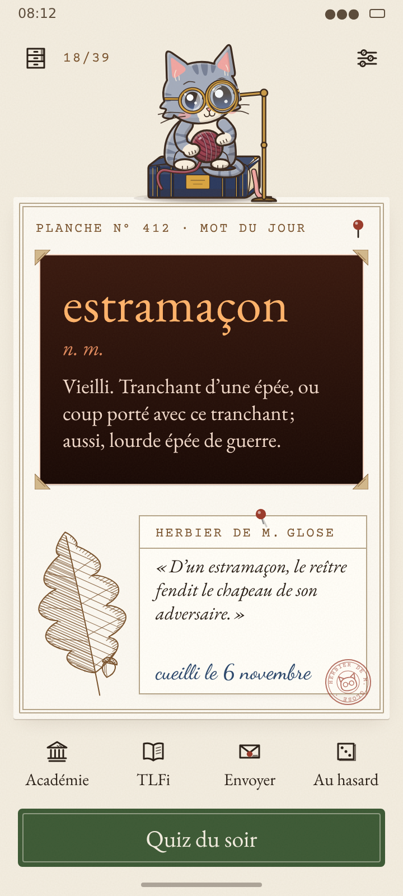
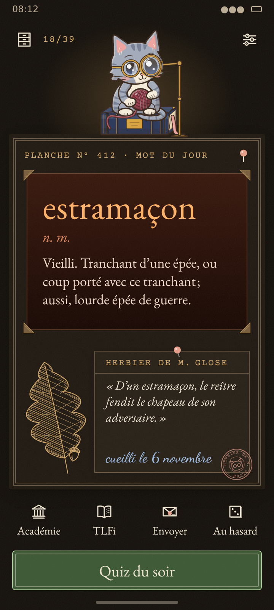
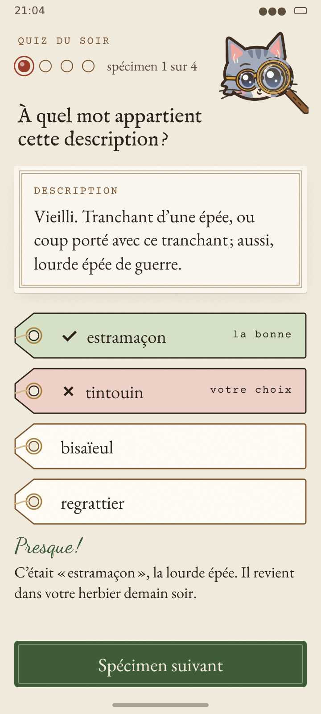
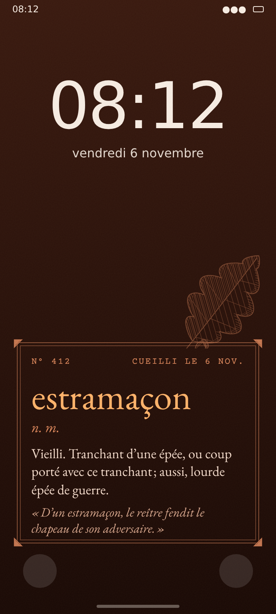

Herbier des mots
Chaque mot est un spécimen cueilli, monté sur sa planche, étiqueté par Monsieur Glose, puis rangé dans le cabinet.

Accueil · jour
Accueil · nuit
Quiz · réponse fausse
Écran verrouillépapier
#F2ECDF
planche
#FBF8F1
encre
#2A2018
sépia
#7B5530
herbier
#3D5A36
garance
#9A3B2B
prusse
#2E4A6E
kraft
#D2B88C
papier nuit
#16120E
sépia nuit
#D4AA6E
herbier nuit
#A9C79A
estramaçon n. m.
Le cabinet de M. Glose
Planche n° 412
cueilli le 6 novembre
18 palettes, 18 gravures : la palette du mot teint la monture et choisit le spécimen gravé
Encre de Chinenoix de galle
Bleu nuitpavot
Ardoiselichen
Vert-de-grisammonite
Lie-de-vinvrille de vigne
Braisechêne roussi
Sous-boisfougère
Violineaconit
Abyssescorail
Parcheminépi de blé
Sépiaos de seiche
Sanguineéglantine
Safrancrocus
Lavandelavande
Givrerameau givré
Aubecoquelicot
Pistachepois de senteur
Craienautile